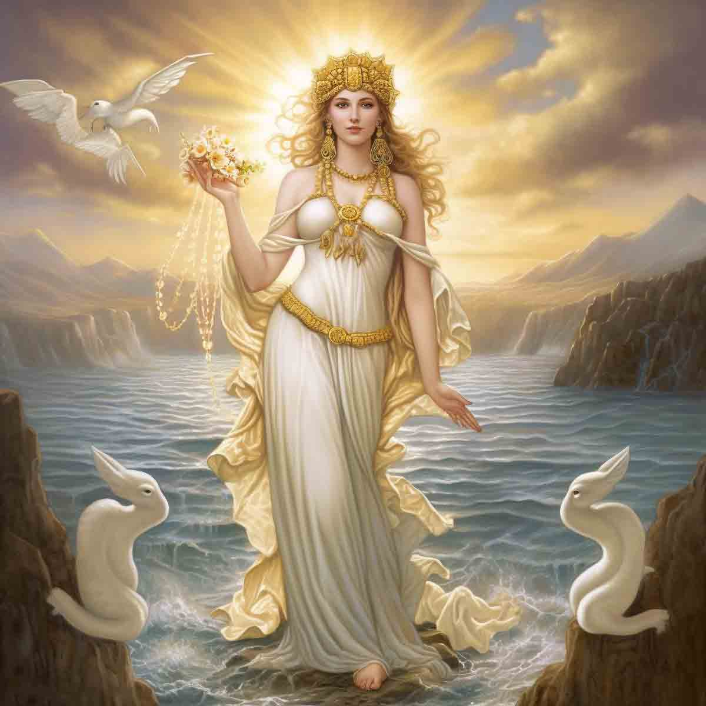

Aphrotide
DEESSE DE L'AMOUR ET DE LA FECONDITE
-
Nom romain : Venus
Etymologie : L'« ecume »
Père : Ouranos
Mère : La mer
-
Aphrodite, déesse très « aphrodisiaque », née de l’écume de la mer, était apparu dans toute la séduction de sa nudité
aux Olympiens. Sa beauté lui fit remporter la pomme dédiée « a la plus belle » des déesses.
(elle peut aussi etre considere comme une deesse de la premiere generation)
-
-
La naissance d'Aphrodite vient d'une histoire piquante : le ciel d'Ouranos maintient ses enfants
prisonniers dans le ventre de leur mère Gaia, la Terre, en s’allongeant sur elle. Gaïa, lassée,
a donné une faucille à un de ses fils, Cronos, afin qu'il puisse couper le sexe de son père, pour
qu’il parte une bonne fois pour toute. Cela marcha et le sperme d'Ouranos est tombé dans la mer et
a créé d’écume. Cette dernière féconda les flot et Aphrodite naquit.
-
Aussitôt mariée à Héphaïstos, Aphrodite s’empressa de le tromper avec Arès, le dieu de la guerre.
Mais les amants furent surpris par le soleil, qui prévint le mari outragé. Héphaïstos décida de se venger :
il confectionna un filet transparent, installé au-dessus du lit d’Aphrodite, et emprisonna les adultères,
puis les traina, nus et emmêlés, devant tous les olympiens qui se moquaient d’eux. Mortifié, Aphrodite et
Arès se séparèrent et s’exilèrent.
-
Lors du mariage de Pélée et Thétis, la déesse Eris (Discorde), énervée que l’on ne l’a pas été invitée,
déposa une pomme d'or destinée « À la plus belle » Toutes les déesses la voulait,Zeus décida que Pâris
(un berger), désignerait la plus jolie. Aphrodite lui promis de lui donner la plus belle des femmes pour
épouse : Il lui offrit la pomme. Hélas ! La femme que Pâris choisit, Hélène, était mariée : il l’enleva
et cela déclencha la guerre de Troie…